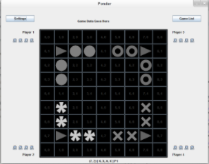
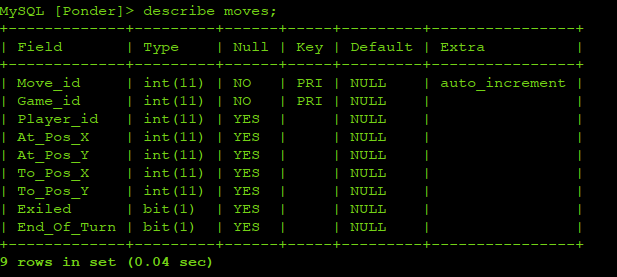

Jackson National Life
I have been an intern at Jackson National Life for over 3 years. I have currently accepted an offer to start my career there after I graduate. In my time at Jackson, I have worked on multiple projects that involved taking older applications and recreating them as Web Applications. I have also been involved with other side projects to parse through log files using Regex and store the data.

Keyshare
Keyshare is a program that I worked on with some friends at Mhacks a couple of years ago. The program is designed to allow multiple computers on the same network to share a keyboard/mouse combination. This is meant for someone to work with multiple computers from one workstation. It also was being built to help with troubleshooting over a network, so that a screen can be shared and work can be done remotely.
Link to Keyshare
Ponder
Ponder is a project that I worked on in my Team Software Project class. The project is a game that was created by someone in our group that we decided to turn into our project. The game was designed to allow multiple people to play over the internet and it will store the game state so that they can set the game down and come back to it later.
Link to Ponder 